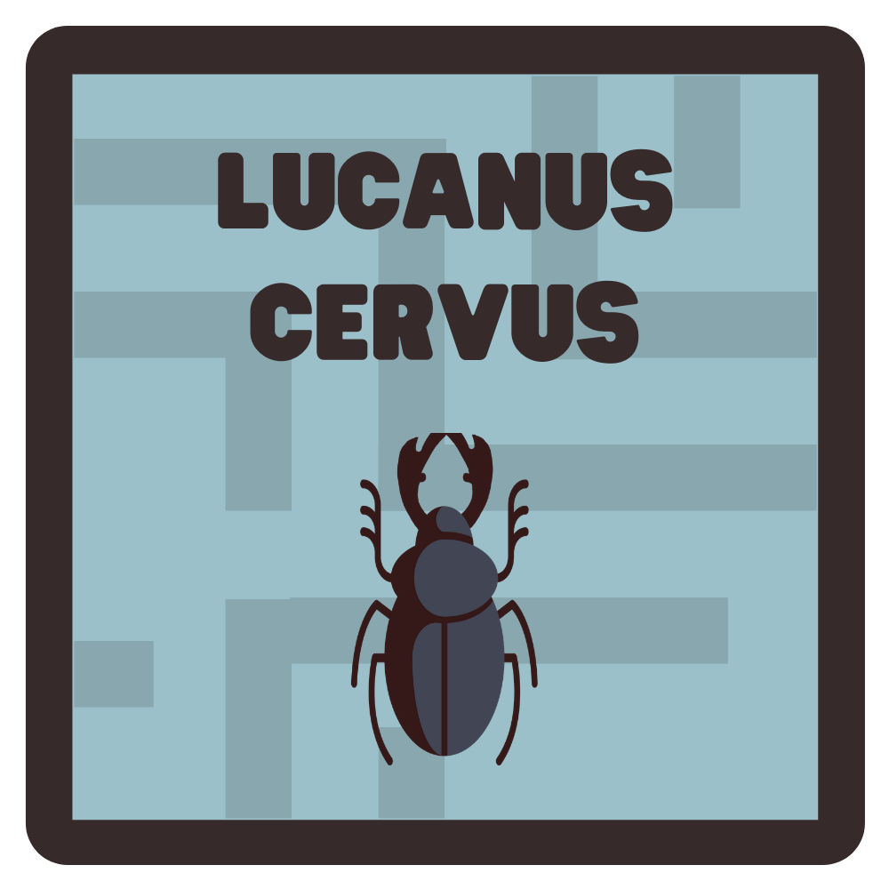

Lucanus Cervus Maze
Alimentação
Para que a larva de vaca-loura cresça, terá de se alimentar através de madeira morta. Para tal, terás que colidir com os troncos distribuídos pelo labirinto. A vaca-loura conseguirá alimentar-se caso respondas corretamente às perguntas que irão surgir, caso contrário, perderás vidas. A vaca-loura atinge a sua fase adulta quando alimentada seis vezes. Por cada madeira comida ganhas dez segundos extra.

Vidas
O jogador contará com três vidas, poderá encontrar vidas extra espalhadas ao longo do labirinto.
Controlos
Para se deslocar, o utilizador poderá utilizar as letras W, A, S e D e as arrow keys.
Veneno
Existem garrafas com veneno espalhadas pelo labirinto, evita-as.
Objetivo
O objetivo principal é garantir a conservação e a reprodução da especie. Este é atingido quando o jogador alcança a femea para acasalarem.
Romeu é uma larva de vaca-loura, desajeitada, com pouca experiência e com pouca ou nenhuma vontade de crescer. Ele deixa a vida tomar o seu próprio rumo, até conhecer a Julieta, uma bonita e corajosa vaca-loura fêmea adulta, exatamente o tipo de escaravelho que Romeu adora, mas existe um problema... ele ainda é uma larva e as vacas-louras só acasalam com espécimes adultos. Agora com um novo objetivo de vida, o Romeu irá esforçar-se ao máximo para encontrar toda a madeira possível para poder crescer e tornar-se na melhor versão de si mesmo, maior e mais robusto e conseguir conquistar a atenção e o amor da Julieta.